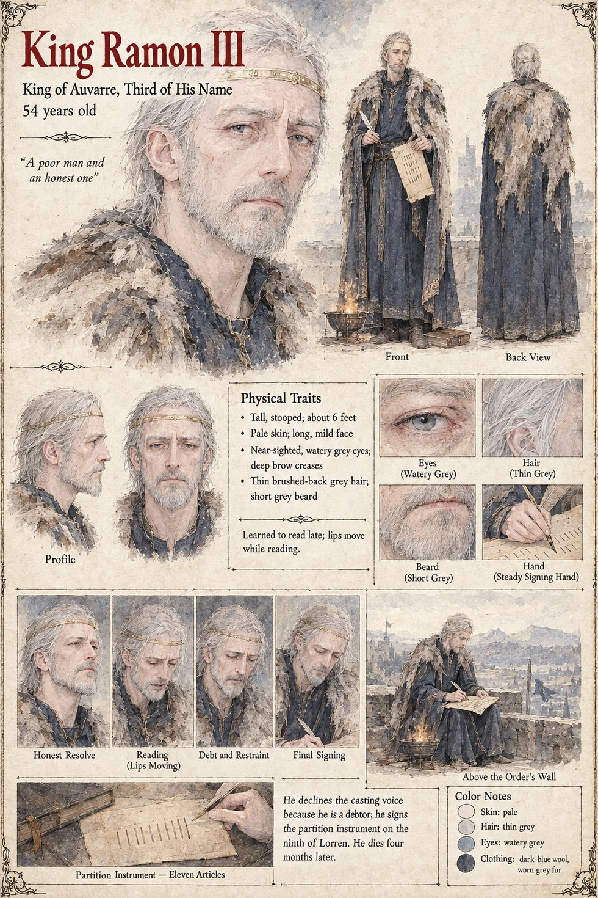

King Ramon III
King of Auvarre, third of his name, seated at Montclar · twenty-six years on the throne · 54 years old by his sheet
The king of Auvarre, who sits at Montclar in a palace the court jokes was built by a committee of the dead, and who is, in the letter that opens the case, the one person in the realm with no grain, no gold and no soldiers who says so. He commands every baron of the southern marches to do what his own hand can find to do, summons the three altars of the Accord of Montclar to the March, and offers them, being poor, the only coin a poor king can mint without leaving a mark on his treasury, which is credit: the Right of First Naming. On the twenty-sixth of Garren, the day a clerk of the Last Order calls at the palace to remind him, with perfect courtesy, of the date the wall-loan falls due, he signs a second letter and sends it south without waiting to learn what the altars have done. Being a poor man and an honest one, and in debt to one of them, he cannot in conscience give a casting voice in a cause in which he is himself a debtor. A debtor who cast for his creditor would be a king bought, and one who cast against him a king foreclosed; he chooses, as poor men do, the course that costs him nothing, which is to be absent from the Accord in advance.
He signs the partition on the ninth of Lorren in the third winter, in a room above the wall the Order's money built, with a brazier at his feet and the Provost-Examiner of the Montclar chapter at his elbow holding the pen: eleven articles recognising two countries, the Lit Reach and the Baronies, and releasing the crown from the loan in return for acknowledging the Naming of the Last Order on one side of a line and of the Threefold on the other. He reads all eleven, which no one asked him to do, with his lips moving slightly, as men read who were taught to read late, and then looks at the wall of the room and says that it is a good wall. His hand does not shake; it is the one thing in the room that remains under his command, and he spends it as a man spends his last coin. He dies four months later and is buried in the spring beneath a stone the Order paid for. The manuscript gives his twenty-six years and his late reading, not his age; the sheet's fifty-four, near-sighted watery grey eyes, thin brushed-back grey hair and short beard are its own.
“It is a good wall.”